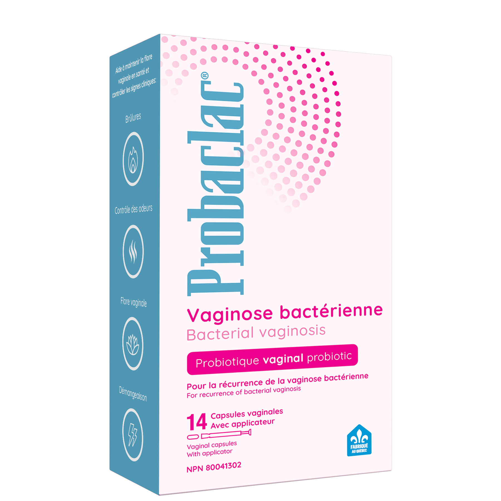

Probaclac targets the source — rebuilding your protective vaginal flora so BV doesn't return. 84% of women saw no recurrence after treatment.

8 billion bacteria from 3 clinically selected strains
Insert one capsule intravaginally at bedtime for 14 consecutive days or as directed by a healthcare practitioner. Probiotics will colonize the vaginal flora, producing lactic acid to lower pH and form the protective biofilm that keeps the vaginal environment healthy against harmful bacteria like Gardnerella vaginalis.
BV occurs when harmful bacteria like Gardnerella vaginalis overtake the protective bacteria. Probaclac acts directly at the source.
See clinical results →"After years of recurring BV and constant antibiotic prescriptions, I finally found something that actually works long-term. I feel fresh and confident every day."
"My doctor recommended probiotics after my third round of antibiotics. Probaclac was the only one specifically designed for vaginal use. Night and day difference."
"Easy to use, no mess. Completed the 14-day treatment and haven't had a recurrence in months. I wish I'd found this sooner. Made in Canada too!"
A study of 120 women with recurring BV demonstrated the power of targeted vaginal probiotics.
Everything you need to know before starting your treatment.
14 nights. 8 billion bacteria. One fresh start. Join the women who chose to restore, not just treat.
Buy now on Amazon — 28.99 $